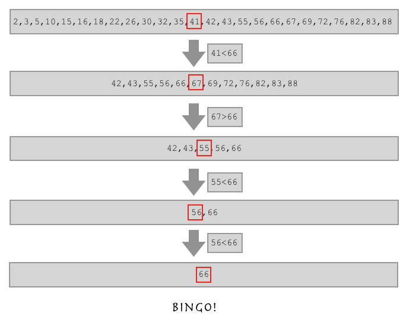

递归函数：在一个函数里在调用这个函数本身。
递归的最大深度：998
正如你们刚刚看到的，递归函数如果不受到外力的阻止会一直执行下去。但是我们之前已经说过关于函数调用的问题，每一次函数调用都会产生一个属于它自己的名称空间，如果一直调用下去，就会造成名称空间占用太多内存的问题，于是python为了杜绝此类现象，强制的将递归层数控制在了997(只要997！你买不了吃亏，买不了上当...).
拿什么来证明这个“998理论”呢？这里我们可以做一个实验：
def foo(n):
print(n)
n += 1
foo(n)
foo(1)由此我们可以看出，未报错之前能看到的最大数字就是998.当然了，997是python为了我们程序的内存优化所设定的一个默认值，我们当然还可以通过一些手段去修改它：
import sys
print(sys.setrecursionlimit(100000))我们可以通过这种方式来修改递归的最大深度，刚刚我们将python允许的递归深度设置为了10w，至于实际可以达到的深度就取决于计算机的性能了。不过我们还是不推荐修改这个默认的递归深度，因为如果用997层递归都没有解决的问题要么是不适合使用递归来解决要么是你代码写的太烂了～～～
看到这里，你可能会觉得递归也并不是多么好的东西，不如while True好用呢！然而，江湖上流传这这样一句话叫做：人理解循环，神理解递归。所以你可别小看了递归函数，很多人被拦在大神的门槛外这么多年，就是因为没能领悟递归的真谛。而且之后我们学习的很多算法都会和递归有关系。来吧，只有学会了才有资本嫌弃！
这里我们又要举个例子来说明递归能做的事情。
例一：
现在你们问我，alex老师多大了？我说我不告诉你，但alex比 egon 大两岁。
你想知道alex多大，你是不是还得去问egon？egon说，我也不告诉你，但我比武sir大两岁。
你又问武sir，武sir也不告诉你，他说他比太白大两岁。
那你问太白，太白告诉你，他18了。
这个时候你是不是就知道了？alex多大？
| 1 | 金鑫 | 18 |
|---|---|---|
| 2 | 武sir | 20 |
| 3 | egon | 22 |
| 4 | alex | 24 |
你为什么能知道的？
首先，你是不是问alex的年龄，结果又找到egon、武sir、太白，你挨个儿问过去，一直到拿到一个确切的答案，然后顺着这条线再找回来，才得到最终alex的年龄。这个过程已经非常接近递归的思想。我们就来具体的我分析一下，这几个人之间的规律。
age(4) = age(3) + 2
age(3) = age(2) + 2
age(2) = age(1) + 2
age(1) = 40那这样的情况，我们的函数怎么写呢？
def age(n):
if n == 1:
return 40
else:
return age(n-1)+2
print(age(4))如果有这样一个列表，让你从这个列表中找到66的位置，你要怎么做？
l = [2,3,5,10,15,16,18,22,26,30,32,35,41,42,43,55,56,66,67,69,72,76,82,83,88]你说，so easy！
l.index(66)...
我们之所以用index方法可以找到，是因为python帮我们实现了查找方法。如果，index方法不给你用了。。。你还能找到这个66么？
l = [2,3,5,10,15,16,18,22,26,30,32,35,41,42,43,55,56,66,67,69,72,76,82,83,88]
i = 0
for num in l:
if num == 66:
print(i)
i+=1上面这个方法就实现了从一个列表中找到66所在的位置了。
但我们现在是怎么找到这个数的呀？是不是循环这个列表，一个一个的找的呀？假如我们这个列表特别长，里面好好几十万个数，那我们找一个数如果运气不好的话是不是要对比十几万次？这样效率太低了，我们得想一个新办法。
l = [2,3,5,10,15,16,18,22,26,30,32,35,41,42,43,55,56,66,67,69,72,76,82,83,88]你观察这个列表，这是不是一个从小到大排序的有序列表呀？
如果这样，假如我要找的数比列表中间的数还大，是不是我直接在列表的后半边找就行了？

这就是二分查找算法！
那么落实到代码上我们应该怎么实现呢？
简单版二分法
l = [2,3,5,10,15,16,18,22,26,30,32,35,41,42,43,55,56,66,67,69,72,76,82,83,88]
def func(l,aim):
mid = (len(l)-1)//2
if l:
if aim > l[mid]:
func(l[mid+1:],aim)
elif aim < l[mid]:
func(l[:mid],aim)
elif aim == l[mid]:
print("bingo",mid)
else:
print('找不到')
func(l,66)
func(l,6)升级版二分法
l1 = [1, 2, 4, 5, 7, 9]
def two_search(l,aim,start=0,end=None):
end = len(l)-1 if end is None else end
mid_index = (end - start) // 2 + start
if end >= start:
if aim > l[mid_index]:
return two_search(l,aim,start=mid_index+1,end=end)
elif aim < l[mid_index]:
return two_search(l,aim,start=start,end=mid_index-1)
elif aim == l[mid_index]:
return mid_index
else:
return '没有此值'
else:
return '没有此值'
print(two_search(l1,9))我的博客即将搬运同步至腾讯云+社区，邀请大家一同入驻：https://cloud.tencent.com/developer/support-plan